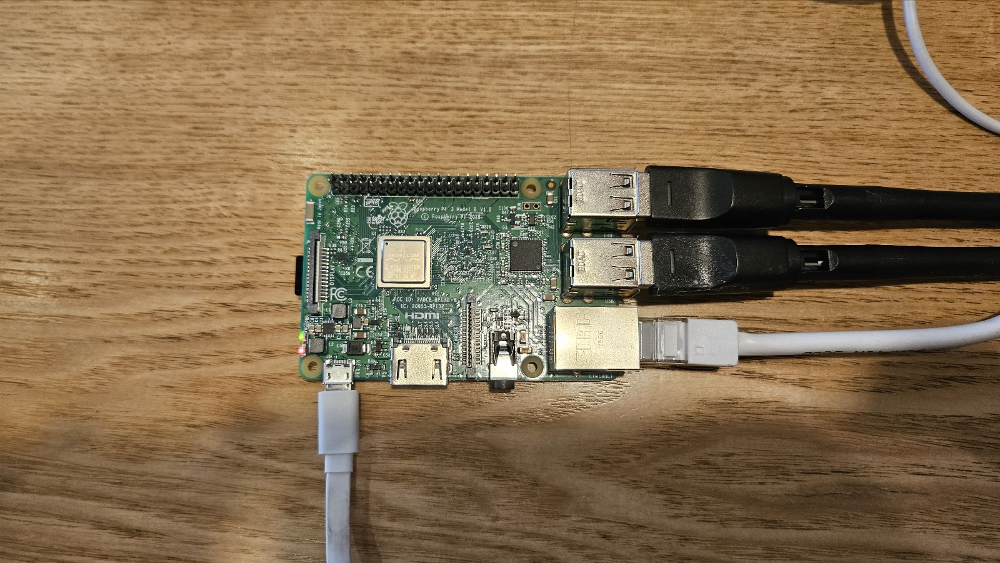
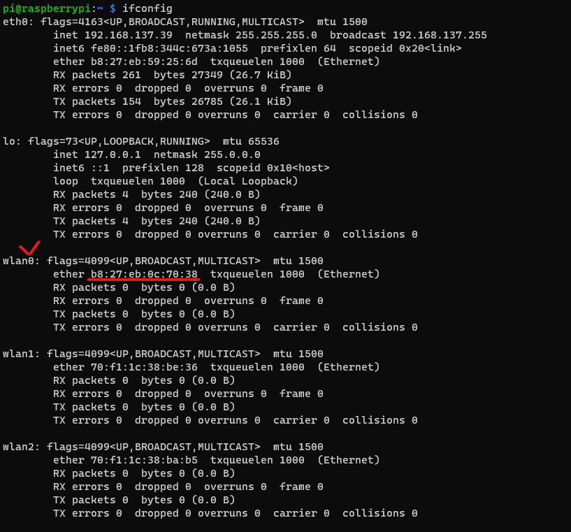
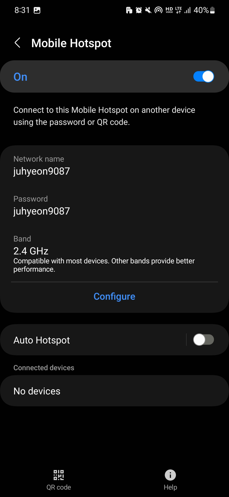
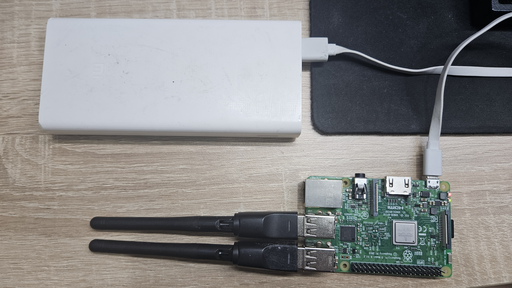
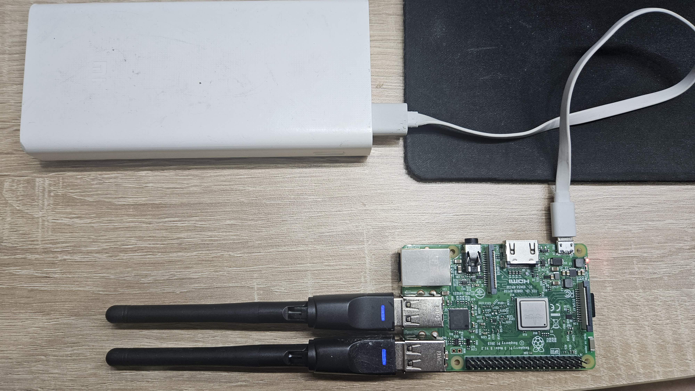
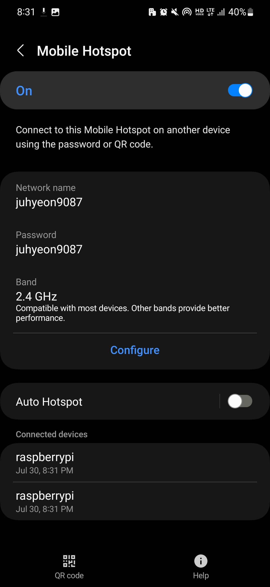
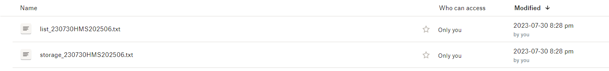

5 Implementation
Dive into the step-by-step process of implementing and testing the Urban Sensing Service on your Raspberry Pi, both in a controlled environment (6.1) and in real-world scenarios (6.2).
5.1 Sensing Service Testing in Controlled Environment
5.1.1 Raspberry Pi Setup
Before setting up, power off the Raspberry Pi. Once turned off, insert the additional WiFi adapter. Afterward, power the Raspberry Pi back on.

Access the Raspberry Pi via ssh and check the wlan interface to check the internal wifi set to be wlan0 by excueting this:
ifconfigEnsure that the wlan0 interface is correctly assigned. The internal interface should have a MAC address starting with b8:27:eb. Subsequent WiFi adapters should follow a sequence like wlan1, wlan2, and so on.

If the assignment isn’t correct, refer to Section 2.4 for the appropriate setup instructions.
5.1.2 Script Execution
Easily access the superuser shell with:
sudo suInitiate the Urban Sensing code:
python3 urban-sensing-raspi/code/start.pyLet it run for about 2 minutes before halting it using Ctrl+C.
5.1.3 Customizing Your Sensing
The Urban Sensing Service isn’t just about standard WiFi data collection; it offers a broader scope:
Retain Raw WiFi Packets : Use the
-ioption:python3 urban-sensing-raspi/code/start.py -iIntroduce Bluetooth Sensing : Add the
-boption:python3 urban-sensing-raspi/code/start.py -bDiscover More Options : Read our the GitHub Repository.
5.2 Verifying the Results
1. Access the Pi folder: type \\raspberrypi\share on file explore.
2. Look around ‘stats’ Folder :
3. ‘data’ Folder :
- If you used
-b, expect a Bluetooth file. Otherwise, it won’t appear. - Check for the creation of the WiFi packet file. To delve deeper, use DB Browser for SQLite.
5.3 Setting Up Sensing Service
Once you’ve validated the sensing outputs, you can finalize the settings to fit your objectives. Notably, this will allow your Raspberry Pi to initiate the sensing service upon booting up.
Execute the following script:
bash urban-sensing-raspi/service.shFollow the on-screen prompts and ensure its proper functioning. Exit the status info using ctrl+c.
After running service.sh, your Raspberry Pi will start start.py on every boot. If you need to do tasks like file transfers, pause this service. The start.py has a 30-second delay at the start. If you stop the service within this time using systemctl stop sensing.service, the script won’t perform any actions.
sudo systemctl stop sensing.service5.4 Sensing Service Testing in Real-world Scenarios
In this section, we’ll test the sensing service without Ethernet, simulating a real-world application. Follow these detailed steps for a successful setup and operation:
5.4.1 Activate Mobile Hotspot
Activate the hotspot on your mobile device. This is essential for providing internet connectivity to the Raspberry Pi, which will enable time synchronization and status updates via Dropbox.

5.4.2 Connect the External Battery
Ensure you’ve connected an external battery to power both your Raspberry Pi and the WiFi adapters.

5.4.3 Monitor WiFi Adapter Activity
Check for indicator lights on the WiFi adapter. In station mode, when the adapter is networking, the lights should turn on. You should also see the Raspberry Pi appear on your mobile hotspot interface.
If the status lights remain off or the Raspberry Pi does not appear on your hotspot interface, there might be an issue with your adapter. Consider getting a replacement.

Observe the WiFi adapter’s status lights. When networked (station mode), these should illuminate. Concurrently, you’ll see the Raspberry Pi connect to your mobile hotspot interface.

When accessing your Raspberry Pi via a mobile phone, the raspberrypi network might not disappear immediately. This is attributed to the wlan0 interface. A Python script will disconnect and turn off the wlan0 function approximately 3 minutes later.
5.4.4 Validate Dropbox Connectivity
Once connected to the network with the correct Dropbox settings, you should start seeing files from your Raspberry Pi appear in your Dropbox.

5.4.5 Check the WiFi adapter going on monitor mode
In monitor mode, the WiFi adapter’s status light should turn off, and its connection will vanish from your mobile hotspot interface.

5.4.6 Wait for Sensing Operation
Throughout the designated sensing duration, the service will capture packets.
5.4.7 End Sensing Operation
To conclude the sensing operation, simply unplug the battery.
5.4.8 Review Sensing Results
Use Ethernet or your mobile phone hotspot to access and review the generated sensing results, as same to the controlled enviroment testing.